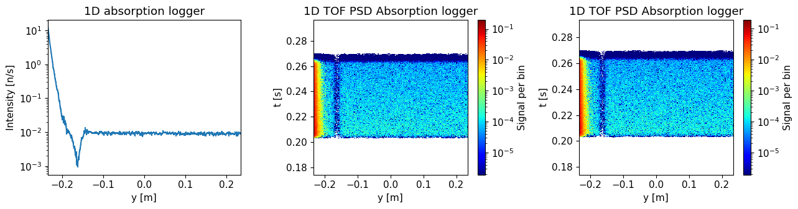
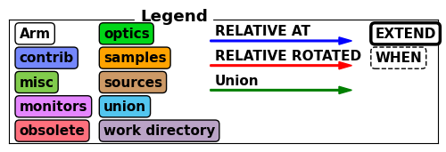
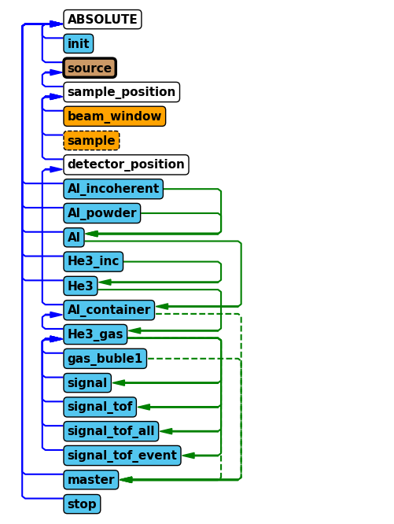
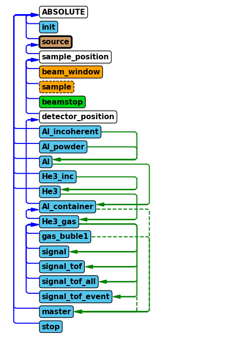
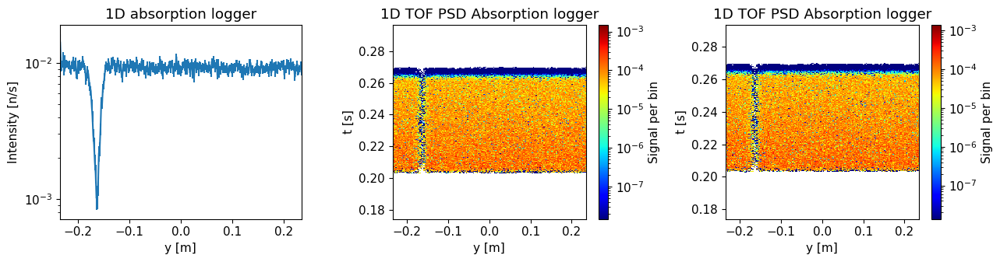
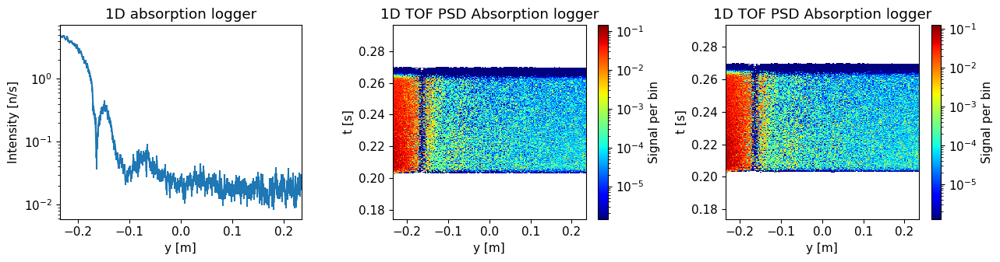

import mcstasscript as ms
import make_SANS_instrument
import quizlib
quiz = quizlib.SANS_Quiz()
SANS exercise#
In this notebook you will work with a McStas model of a simplified SANS instrument. You will have to answer questions in the notebook by working with this model, both by running simulations and expanding the model. We will use the Python McStas API McStasScript to work with the instrument, you can find documentation here.
SANS is an abbreviation for Small Angle Neutron Scattering, and as the name suggests is concerned with neutrons scattered at very small angles. Here we will look at a sample in solution composed of some simple geometry, which will cause an interesting scattering pattern on the detector.
Get the instrument object#
First we need the McStas instrument object. Here it is retrieved from a local python function that generates it.
instrument = make_SANS_instrument.make()
Investigate instrument#
The first task is to investigate the instrument object instrument using some of the available methods available on that object. Each method that show something about the instrument starts with the word show, so you can use tab to autocomplete in the cell to see the relevant methods.
In particular, look at what parameters are available and take a look at the instrument geometry.
Set parameters#
Before we run a simulation using the instrument, we need to set some parameters to the desired values.
The most important one is the detector_distance parameter describing the distance between the sample and the detector.
Given the need for high angular precision in determining the scattering angle of the neutron, which of these would be best?
A: 1 m
B: 2 m
C: 3 m
quiz.question_1()
Set the parameters of the instrument using the set_parameters method. In addition to the detector distance from the previous question, the parameters should be:
sample_distance: 150 m
wavelength: 6 Å
wavelength band: 1.5 Å
enable_sample: 0
n_pulses: 1
# Test your instrument by giving it to the question_2 function
quiz.question_2(instrument)
Instrument settings#
Before running the simulation, a few settings pertaining to computing options need to be specified. This is done with a different method to clearly distinguish these from the instrument parameters. One important setting is called output_path which sets the name of the generated folder with simulation output.
instrument.settings(ncount=5e6, mpi=6, suppress_output=True, NeXus=True, output_path="first_run")
Run the instrument#
Now the simulation can be executed with the backengine method. This method returns a list of data object. Store this returned data in a python variable named data.
data = instrument.backengine()
data
[
McStasData: signal type: 1D I:44.7817 E:0.183795 N:3028530.0,
McStasDataEvent: signal_tof_event with 3028526 events. Variables: p x y n id t,
McStasData: signal_tof_all type: 2D I:44.7817 E:0.183795 N:3028530.0,
McStasData: signal_tof type: 2D I:44.7817 E:0.183795 N:3028530.0]
Visualize the data#
The data objects in the returned list can be plotted with the McStasScript function make_plot. The plots can be customized, use these keyword arguments:
log : True
orders_of_mag : 5 (maximum orders of magnitudes plotted when using logarithmic plotting)
Plot overview#
The function should plot three graphs:
1D absorption logger#
This shows intensity along our single detector tube along its height y. Its coordinate system is such that 0 is 25 cm above the center of the beam.
1D TOF absorption logger#
Shows the same intensity as a function of the detector height, though here also as a function of when the neutron was detected. This one has the time axis restricted to show only one pulse.
1D TOF absorption logger#
Same as above, though will show all pulses if several are simulated.
ms.make_sub_plot(data, log=True, orders_of_mag=5)
Skipped plotting signal_tof_event as it contains event data.

Interpretation of the data#
The detector is a He3 tube centered 25 cm above the beam height and with a metal casing.
What does the signal look like without sample?
A: Most of the signal close to the direct beam
B: Flat signal over detector height
C: Most of the signal is far away from the direct beam
quiz.question_3()
Is this a problem for a SANS instrument?
A: Yes
B: No
quiz.question_4()
How can it be improved?
A: By adding a Velocity selector
B: By adding a Chopper
C: By adding a Beamstop
D: By adding a Slit
quiz.question_5()
Improve the instrument#
In order to improve the performance of the instrument, we will add a McStas component corresponding to the answer of question 5. The first aspect to consider when adding a component is where to place it, both in the component sequence and its physical location. The position in the component sequence needs to be specified when adding the component, so this will be the first decision.
McStas component sequence#
Use either the show_diagram or show_components method on the instrument object to get an overview of the component sequence in the instrument.
Where would you place the new component?
A: After the source
B: Before the sample position
C: After the sample position
D: Before the detector position
instrument.show_diagram()


quiz.question_6()
Which component#
Now we need to select what type of component to add to the instrument, here we will need the Beamstop component.
Let’s use the component_help method on the instrument to learn more about this component.
instrument.component_help("Beamstop")
___ Help Beamstop __________________________________________________________________
|optional parameter|required parameter|default value|user specified value|
xmin = -0.05 [m] // Lower x bound
xmax = 0.05 [m] // Upper x bound
ymin = -0.05 [m] // Lower y bound
ymax = 0.05 [m] // Upper y bound
xwidth = 0.0 [m] // Width of beamstop (x). Overrides xmin, xmax.
yheight = 0.0 [m] // Height of beamstop (y). Overrides ymin, ymax.
radius = 0.0 [m] // radius of the beam stop in the z=0 plane, centered at Origo
-------------------------------------------------------------------------------------
Adding beamstop component and set parameters#
Next we add the beamstop using add_component method on the instrument.
The beamstop is placed in the component sequence according to your answer in question 6 by using the before keyword argument in add_component. The add_component method returns the component object that is saved in a Python variable.
The component parameters of the components are set to:
xwidth: 0.1 myheight: 0.02 m
beamstop = instrument.add_component("beamstop", "Beamstop", before="detector_position")
beamstop.set_parameters(xwidth=0.1, yheight=0.02)
Placing the component in space#
The next decision is the physical location of the component, this is done using the set_AT method on component object.
This method takes a list of 3 numbers, corresponding to the x, y and z coordinates of the component.
One can also specify in what coordinate system one wants to work, this can be that of any preceding component.
The RELATIVE keyword is used select the sample_position coordinate system. The instrument has a parameter called detector_distance, this parameter is used to place the beamstop 90% of the way from the sample to the detector.
beamstop.set_AT([0, 0, "0.9*detector_distance"], RELATIVE="sample_position")
Verify new component#
Now that the beamstop has been added to the instrument, lets show the component sequence again to verify it was added correctly.
instrument.show_diagram()

Run improved instrument#
It is time to run the improved instrument. We will use the same parameters as earlier, but now also set integration_time to \(5\times 10^4\), corresponding to 13.8 hours. This is supposed to emulate a long measurement of the instrument background only done rarely. We use the integration time in the continued workflow to estimate the error on the measured signal.
Store the returned data in a variable called background_data. Name the generated data folder “SANS_without_sample” using the output_path argument in the settings method of the instrument.
instrument.set_parameters(integration_time=5e4)
instrument.settings(output_path="SANS_without_sample")
background_data = instrument.backengine()
background_data
[
McStasData: signal type: 1D I:2.68388 E:0.0101649 N:1858570.0,
McStasDataEvent: signal_tof_event with 1858569 events. Variables: p x y n id t,
McStasData: signal_tof_all type: 2D I:2.68388 E:0.0101649 N:1858570.0,
McStasData: signal_tof type: 2D I:2.68388 E:0.0101649 N:1858570.0]
Plot the resulting data.
ms.make_sub_plot(background_data, log=True, orders_of_mag=5)
Skipped plotting signal_tof_event as it contains event data.

Do you see an improvement compared to earlier results?
A: Yes
B: No
quiz.question_9()
Run with sample#
It is time to add the sample, this can be done by updating the enable_sample parameter to 1 and calling the backengine method again. Here the integration time should be smaller, 500 s, as this run correspond to one of many measurements of different samples. Save the data in a variable called sample_data and use the settings method to provide a reasonable name to the run using the output_path argument.
instrument.settings(output_path="SANS_with_sample")
instrument.set_parameters(enable_sample=1, integration_time=500)
sample_data = instrument.backengine()
Plot the resulting data.
ms.make_sub_plot(sample_data, log=True, orders_of_mag=5)
Skipped plotting signal_tof_event as it contains event data.

Compare the results with and without sample. Where on the detector is the difference largest?
A: Lowest part of the detector
B: Middle of the detector
C: Top of the detector
quiz.question_10()